地政学
ケアンズは豪州北東端の拠点として、珊瑚海、太平洋島嶼、アジア観光、国防、災害対応を結びます。首都でも州都でもないが、北部豪州の海洋政策と環境外交が生活圏に重なります。観光だけでなく環境安全も担う都市でもあります。
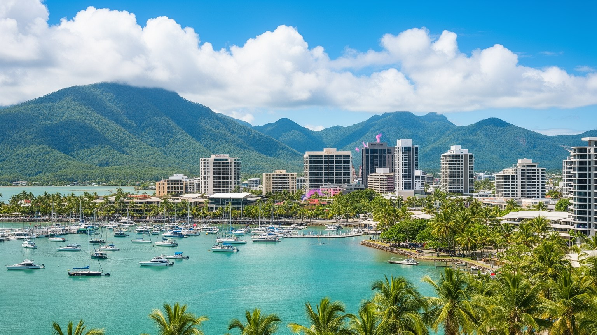
🇦🇺 オーストラリア / オセアニア / World City Atlas
グレートバリアリーフ、湿潤熱帯の森、空港と港、先住民の土地の記憶、観光労働、気候リスクが近距離で重なる北クイーンズランドの入口。
都市の骨格
ケアンズは大都市ではありませんが、世界遺産の海と森、島々、内陸の農牧地、太平洋の観光回路を結びます。小さな中心市街地に国際観光、地域医療、港、空港、気候適応の課題が集まります。
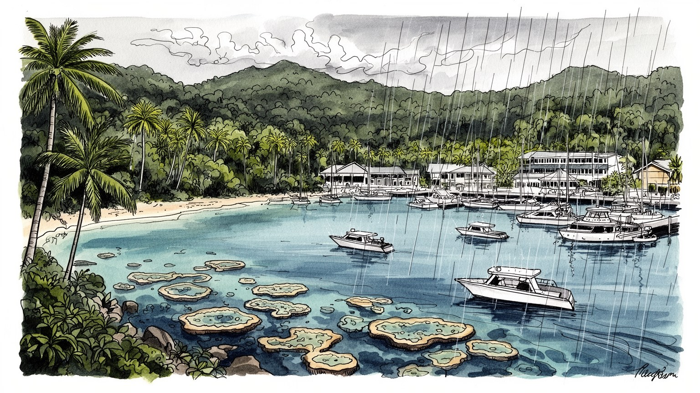
ケアンズは豪州北東端の拠点として、珊瑚海、太平洋島嶼、アジア観光、国防、災害対応を結びます。首都でも州都でもないが、北部豪州の海洋政策と環境外交が生活圏に重なります。観光だけでなく環境安全も担う都市でもあります。
観光、ホテル、船舶、空港、医療、教育、建設、農産物流通が雇用を作ります。繁忙期の客室清掃、調理、送迎、潜水ガイド、港湾作業は国際景勝地の印象を支える不可欠な労働です。研修と住宅確保も大きな課題ともなります。
イディンジ、ジャブガイなど先住民の土地の記憶に、欧州移民、太平洋、アジア系住民、教会、モスク、寺院、観光の交流が重なります。祭礼と芸術は森と海への責任も語ります。地域教育にも深く関わる都市でもある場所です。
旅行者は礁湖、熱帯雨林、島、港、市場を楽しむが、住民には家賃、季節雇用、医療距離、洪水、サイクロン、暑さが現実になります。南国の明るさと生活の脆さが近いです。車社会の負担も日々の条件になる街でもあるのです。
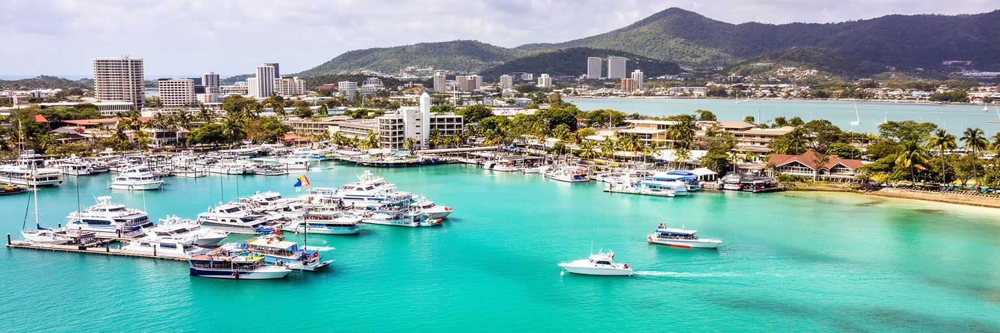
ケアンズの名前は、グレートバリアリーフへの玄関口として世界に知られるのです。港から出る高速船、ダイビング船、ヘリコプター、島へのフェリーは、中心市街地の宿泊施設、旅行会社、飲食店、土産物店、空港送迎と細かく結びつき、海の保護区を日帰り観光の体験へ変えています。ですが礁湖は単なる商品ではありません。白化、海水温上昇、サイクロン、農地からの流出、船の係留、観光客の集中は、生態系と産業の双方に負荷をかけるのです。ケアンズの強みは海に近いことですが、その近さは責任も生みます。ガイドや船員は安全管理、環境説明、救急対応、天候判断を担い、観光客が短時間で見る透明な海の背後には、研究者、レンジャー、伝統的所有者、港湾職員、整備士の継続的な仕事があります。礁湖の健康は都市の雇用に直結し、海が傷めばホテルの稼働率も地域の自信も揺らぐのです。だからケアンズを読むには、絵葉書の海だけでなく、港の朝の準備、保全料金、サンゴのモニタリング、天候で中止になるツアー、海を敬う先住民の知識まで見る必要があります。美しい海は、都市が消費する景色ではなく、都市が守りながら暮らしを組み立てる基盤です。さらに、観光客が海に入る時間と、地域社会が海を管理する時間には大きな差があります。短い体験を長い保全へつなぐ制度と説明が、ケアンズの信頼を支えています。そこが要点なのです。
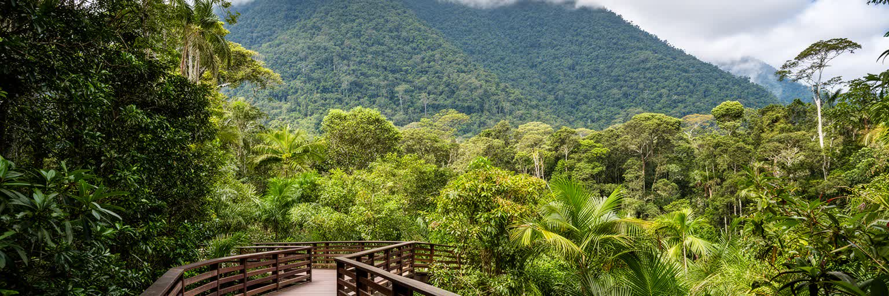
ケアンズの背後には、湿潤熱帯クイーンズランドの雨林が山の壁のように立ち上がるのです。海沿いの平地は狭く、市街地、空港、港、住宅、道路、湿地、砂糖きび畑が、山と珊瑚海のあいだに押し込められています。キュランダへ上る鉄道やスカイレール、バロン渓谷、デインツリー方面への道は、観光の人気ルートであると同時に、世界遺産の森へ人を入れる繊細な境界でもあります。雨林は涼しさ、水、土壌、先住民の知識、生物多様性を支えますが、豪雨、地滑り、道路閉鎖、侵入種、開発圧力も都市に近づけるのです。山の緑は背景ではなく、都市の土地利用を制限し、洪水の流れを決め、観光の言葉を形づくる主体です。住民にとっては週末の散策や滝遊びの場であり、同時に保険、道路復旧、蚊、湿気、雨季の備えを意識させる環境でもあります。森を歩く観光客の快適さは、レンジャー、道路作業員、バス運転手、伝統的所有者の案内によって保たれるのです。ケアンズを理解するには、海だけでなく、背後の山を同じ重さで見る必要があります。雨林の縁に立つ都市だからこそ、成長の限界、自然との距離、土地を誰が語るのかが毎日の政策になります。山側の道路が閉じれば、観光だけでなく通勤、物流、医療にも影響が出ます。緑の近さは美点であると同時に、都市が地形へ従うことを求める条件でもあります。雨音の強さも日々の生活の一部です。
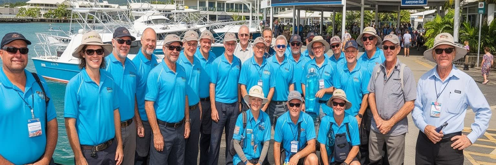
ケアンズの観光経済は、青い海や熱帯雨林の印象よりずっと多くの手で動いています。ホテルの客室清掃、レストランの厨房、ツアーデスク、バス送迎、船の整備、ダイビング指導、救命、空港の地上業務、荷物運搬、洗濯、警備、清掃、翻訳、旅行予約の事務が、滞在を滑らかにします。国際線や国内線の回復、為替、燃料費、天候、学校休暇、感染症、航空会社の路線変更は、地元の勤務シフトと収入を直撃します。観光は明るい産業に見えますが、季節性が強く、賃金、住宅、資格、英語力、長時間労働、若い労働者の定着が常に課題になります。ワーキングホリデーや留学生、先住民のガイド、長く住む接客職、家族経営の店が一つの観光都市を支える一方、家賃が上がると働く人が中心部に住みにくくなります。観光客の満足は、海の透明度だけでなく、朝食の準備、港の安全確認、急な雨への対応、病気になった旅行者への案内にも支えられるのです。ケアンズを読む時は、リゾートの表情だけでなく、早朝の出勤、夜の片付け、繁忙期後の雇用不安、訓練と資格の負担を見る必要があります。世界を迎える都市の質は、接客の笑顔を消耗させず、地域の仕事として持続させられるかにかかっています。人手不足が続くと、サービスの質だけでなく、船の安全、厨房の衛生、従業員の休息にも影響します。観光都市の競争力は、働く人の生活を守る政策と切り離せません。
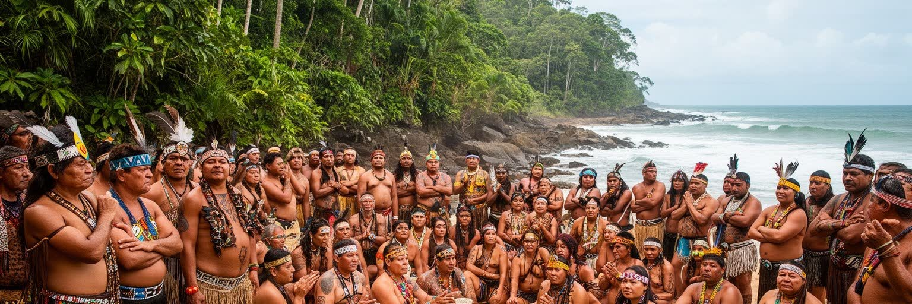
ケアンズを語る時、観光都市としての歴史だけでは不十分です。この地域はイディンジ、ジャブガイをはじめ複数の先住民の土地であり、川、山、湿地、海岸、島、珊瑚海には、移動、食、儀礼、物語、管理の知識が重なっています。植民地化は土地の収奪、暴力、移動制限、労働の搾取、家族の分断をもたらし、その影響は健康、教育、住宅、雇用、文化財保護の課題として現在にも続きます。近年のケアンズでは、先住民アート、ダンス、ガイドツアー、文化センター、言語復興、土地と海の管理、レンジャー活動が、観光と地域教育の重要な柱になっています。ですが文化が観光商品として消費されるだけなら、土地への権利や生活条件の改善には届きません。伝統的所有者の知識が環境管理、開発審査、海洋保全、災害対応に実質的に反映されるかが問われます。観光客がショーや工芸品に触れる時、その背後には長い歴史、家族、土地との関係があります。ケアンズの公共空間を読むには、港やホテルだけでなく、川沿いの地名、山への敬意、アート市場、学校教育、保健サービスを見る必要があります。都市の魅力は自然景観に加えて、土地と海を守ってきた人びとの存在を正面から認めることで深くなります。その認識は歓迎の言葉だけでなく、雇用、教育、土地管理、若者の表現機会に現れなければなりません。文化を担う人が都市の未来を決める席にいるかどうかも重要です。
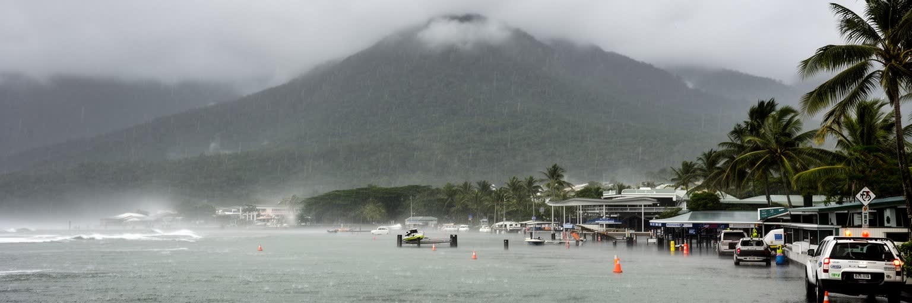
ケアンズの熱帯気候は、乾季の明るい空と雨季の激しい雨を持ちます。観光パンフレットでは青い海と椰子の木が目立つが、住民にとってはサイクロン、高潮、河川洪水、斜面崩壊、湿度、熱中症、蚊媒介感染症、停電が現実的なリスクです。低地に広がる市街地と空港、港、観光施設は海と川に近く、豪雨の年には道路が寸断され、食料、医療、燃料、宿泊予約、学校、仕事に影響が出ます。気候変動は海水温上昇によるサンゴ白化だけでなく、保険料、住宅修繕、排水施設、避難計画、観光キャンセルにも波及します。都市の備えは堤防や排水路だけでは足りません。多言語の警報、障害者や高齢者の避難、観光客への情報、停電時の冷房、携帯通信、港と空港の再開手順、雨季の道路点検が生活を守ります。暑さに強い街路樹や日陰、風通しのよい住宅、湿地の保全も気候適応の一部です。ケアンズを読むには、楽園の気候という言葉の裏側に、毎年の備えと復旧の労働を見る必要があります。自然の近さは都市の魅力であり、同時に脆弱性でもあります。安全な観光都市であり続けるには、海、森、低地、住宅、交通を一体で考える気候政策が欠かせません。避難所の位置、保険に入れない世帯、冷房費を節約する家庭も見落とせありません。災害への強さは、観光施設だけでなく普通の住宅街の回復力で測られるのです。復旧の速度も生活を左右します。
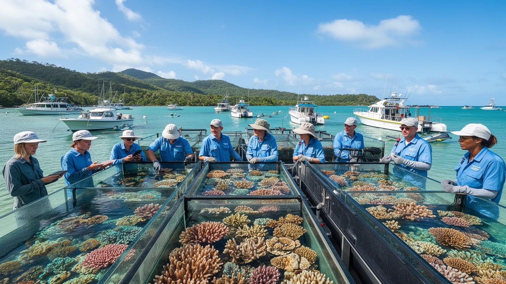
ケアンズは観光の街であると同時に、珊瑚礁の変化を日々観察する前線でもあります。海洋研究者、大学、保全機関、伝統的所有者、観光船事業者、ダイビングガイドは、サンゴの白化、魚類、生態系の回復、海水温、酸性化、病害、観光利用の影響を記録します。研究は遠い実験室だけで行われるのではなく、港から出る船、リーフ上のモニタリング地点、学校の教育、観光客への説明、政策への助言として都市の日常に戻ってくるのです。科学的な知見は、入域ルール、係留、保全費、排水管理、農地流出対策、気候政策を支えますが、短期の観光収入や政治的対立とぶつかることもあります。ケアンズにとって海洋科学は、地域の評判を守るための広報ではなく、産業の土台がどれほど危ういかを測る計器です。若い人にとっては、観光以外の専門職、教育、環境技術への道にもなります。サンゴの状態を正直に伝えることは、旅行需要を怖がらせるだけではなく、守るべき価値を共有する入口になります。ケアンズを読むには、研究者のデータ、ガイドの経験、先住民の海の知識、港の実務を同じ地図に置く必要があります。海の未来を測る街だからこそ、科学と観光を切り離さず、都市の判断として結びつける力が問われています。研究成果を地域の学校や事業者へ戻す回路も大切です。専門的な警告が生活の言葉へ翻訳される時、保全は外からの命令ではなく地域の合意に近づくのです。
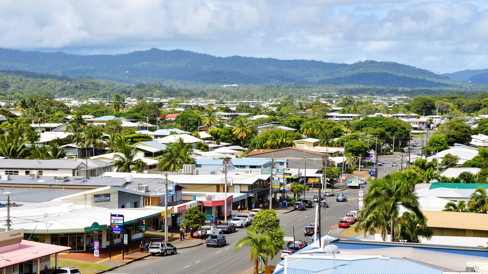
ケアンズは旅行者にとって数日の滞在地でも、住民にとっては学校、病院、買い物、仕事、家賃、子育て、老後が続く生活都市です。エスプラネードの海辺、中心部の飲食街、郊外の住宅地、ショッピングセンター、学校、病院、スポーツクラブ、教会や礼拝所が、日常の移動を作ります。大都市に比べれば規模は小さいが、ファー・ノース・クイーンズランドの広い地域から医療、行政、教育、買い物の用事が集まり、周辺の町や島との結びつきも強いです。観光の繁忙期には雇用が増える一方、家賃、短期宿泊、交通混雑、物価が住民の負担になることがあります。若者は進学や専門職を求めてブリスベンや南部へ移る選択も持ち、高齢者や家族には医療へのアクセスが重要になります。湿度の高い気候では住宅の風通し、冷房費、カビ、虫、日陰が暮らしの質を左右します。ケアンズの日常を読むには、リゾートホテルの外に出て、スーパーの駐車場、学校の送迎、雨の日のバス、地域病院の待合室、郊外の家賃を見る必要があります。美しい景勝地であるほど、観光の利益が地域の暮らしに戻るかどうかが問われます。住民が安心して働き、住み、学べる条件がなければ、訪れる人を迎える都市の厚みも保てありません。公共図書館、スポーツ場、地域医療、子どもの遊び場は、観光客には目立たないが暮らしの基礎です。南国の開放感は、こうした普通の施設が日々使えることで支えられています。
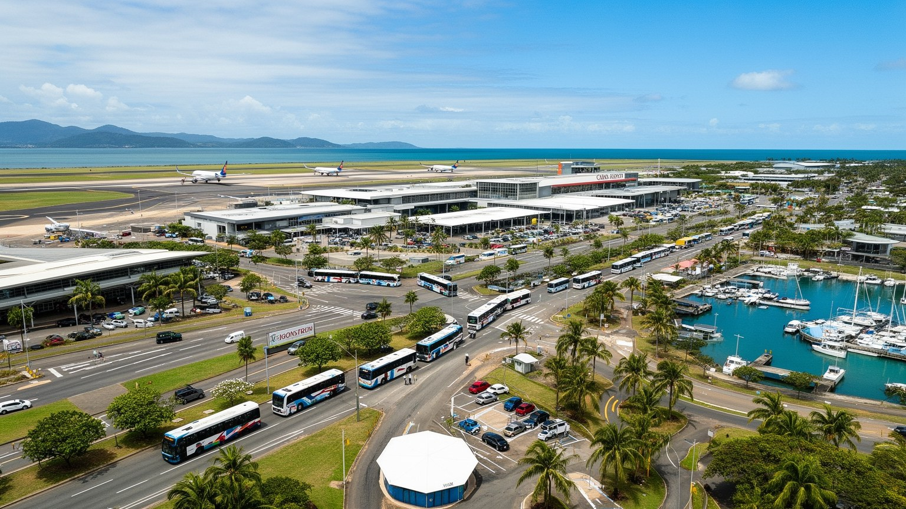
ケアンズの都市機能は、空港と港によって大きく支えられています。国内線はブリスベン、シドニー、メルボルンなどから観光客と住民を運び、国際線はアジアや太平洋との距離感を変えます。空港から中心部まで近いことは旅行者に便利ですが、航空便の本数、燃料価格、国際情勢、感染症、為替は、ホテルの稼働、雇用、地元小売にすぐ響くのです。港はリーフツアーの出発点であり、クルーズ、漁業、船舶整備、物資輸送、緊急対応の拠点でもあります。道路は海岸沿いの狭い地形を走り、雨季の土砂崩れや洪水で脆さを見せることがあります。鉄道は観光資源であるだけでなく、歴史的に内陸との物資と人の流れを支えてきました。公共交通は大都市ほど密ではありませんため、車を持たない若者、高齢者、低所得者、夜勤の労働者には移動の選択肢が限られるのです。観光送迎のバスと住民の通院、通学、買い物は同じ道路を使います。ケアンズを読むには、空港の近さだけでなく、雨で閉じる道路、港の安全確認、郊外バス、離島や内陸から来る人の医療移動を見る必要があります。交通は観光の利便性であると同時に、広い北部地域を支える生活インフラです。距離を縮める都市だからこそ、災害時にも切れにくい移動の設計が重要になります。空港職員、タクシー、レンタカー、整備、燃料補給、清掃の仕事もこの結節点を支えます。移動の安定は地域経済の安定そのものです。
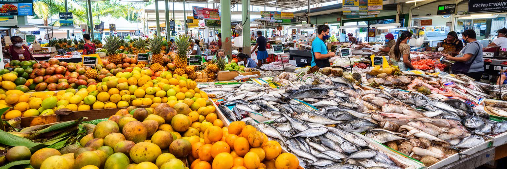
ケアンズの食は、観光客向けのレストランだけでなく、熱帯の農産物、海産物、多文化の移動、地域の市場によって形づくられるのです。マンゴー、バナナ、ライチ、アボカド、コーヒー、サトウキビ、魚介、東南アジア系の味、太平洋のつながり、先住民食材への関心が、北クイーンズランドらしい食の風景を作ります。ラスティーズ・マーケットのような場では、旅行者の好奇心と住民の買い物が交差し、農家、店主、料理人、配達、清掃の仕事が見えます。食の豊かさは気候と土地の恵みである一方、サイクロン、輸送費、労働力不足、冷蔵物流、食品価格、観光需要の変動に左右されます。外食産業は若者や移民の雇用を生むが、夜間労働、低賃金、家賃上昇、仕入れ価格の上昇も抱えます。熱帯果物や海鮮を楽しむだけでは、農場で働く人、船に乗る人、早朝に市場へ運ぶ人の現実は見えにくいです。ケアンズの食を読むには、皿の上の色彩に加えて、雨季の作柄、港の漁、冷蔵トラック、観光客の波、地域の家庭料理を見る必要があります。市場は都市の胃袋であり、農地、海、移民、観光、家計をつなぐ公共的な場所です。食文化が地域に残るには、小さな店が続けられる家賃と、働く人が暮らせる賃金も欠かせません。朝の市場で交わされる会話や値段の変化は、観光統計より早く地域の調子を映すこともあります。食は熱帯都市の経済と近所の信頼を測る手がかりです。
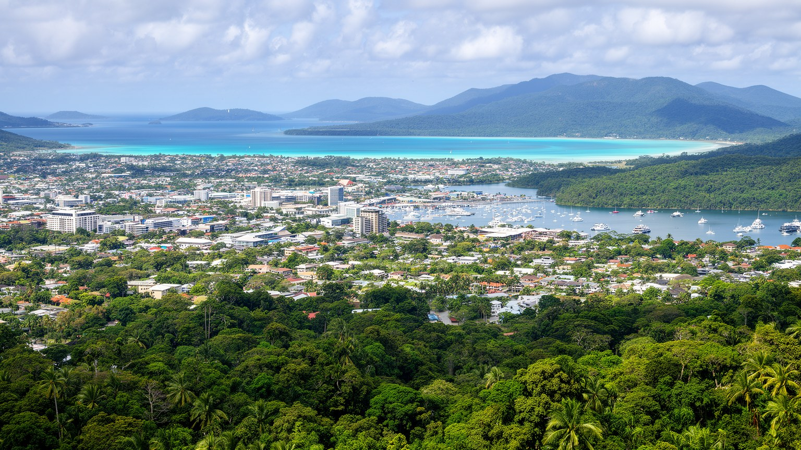
ケアンズを読むことは、小さな観光都市という印象を、海、森、港、空港、先住民の土地、労働、災害、日常生活の層へ開くことです。グレートバリアリーフは世界的な魅力であり、湿潤熱帯の森は都市の背後を守る緑の壁です。ですがその二つの世界遺産のあいだにある市街地では、ホテルの清掃、船の整備、病院の勤務、学校の送迎、家賃の支払い、雨季の備えが毎日続きます。観光は地域に収入と国際性をもたらす一方、季節雇用、住宅費、自然への負荷を生みます。気候変動は遠い環境問題ではなく、サンゴの白化、洪水、サイクロン、保険料、航空需要にすでに影響しています。先住民文化は観光の装飾ではなく、土地と海をどう理解し管理するかの核心です。ケアンズの価値は、規模の大きさではなく、世界的な自然資産と地域の暮らしを近距離で結びつける役割にあります。訪れる人が見る美しさと、住民が担うリスクを同時に見る時、この都市は単なるリゾートの入口ではなく、海洋保全、熱帯都市の生活、北部豪州の未来を考えるための重要な観測点になります。小さな都心、港、空港、郊外、森の縁を歩くことは、自然を売る都市が自然とどう共存するかを確かめることでもあります。都市の成熟は、来訪者数だけでなく、自然の回復、住民の安定、文化への敬意を同時に保てるかで決まるのです。ケアンズはその難しい均衡を毎日試されています。